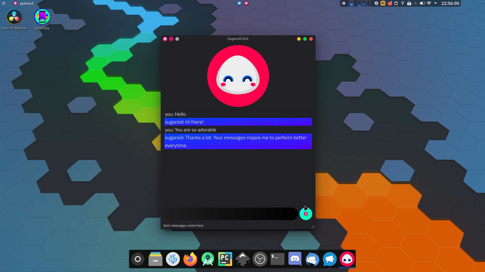

Introduction

IMPORTANT : Sugaroid is an open source software. The web server is deployed on Microsoft Azure. Your support for this open source software is highly necessary to make this project continued to be served on the world wide web. Consider being my patron to help Sugaroid host its servers or if you are willing to lend servers for Sugaroid, press the sponsor button and email me. Thanks. However, Sugaroid will always remain free forever :smile:
Introduction
Sugaroid is a new Artificial Intelligence which uses Natural Language Processing (NLP) with Machine Learning and neural networks to manipulate user input to provide a intuitive response. The AI is built on Python 3.8.2 and was built out of personal interest, to tackle three important issues in the Python framework
- Natural Language Processing / Machine Learning
- Graphical User Interface
- Database Management, Configuration file management and Web Development
Sugaroid Chatbot has a comprehensive and modular interface utilizing Object Oriented Programming to benefit activities of Sugarlabs, a non-profit educational organization. Initially built to serve as a companion bot, the Sugaroid Virtual Assistant helps to comprehend most of the messages, to generate a probable response. The future plans of sugaroid aims to extend Sugaroid as a documentation reader of which beta previews are still under testing.
The Sugaroid bot is deployed in production servers particularly for testing.
- The web interface
- The discord bot
- IRC bot hosted on self when necessary
Installation
Sugaroid is built to be a multiplatform artificial intelligence. There are many ways of installing Sugaroid. the mode of installation depends on the tech stack and developer system. The common installation system has been described below. Sugaroid requires Python 3.6+ to work satisfactorily on a user system. Work on AppImages and pre-built Windows binaries are still under process, as the size of the binaries so built increases tremendously, upto (0.5 GB), which becomes quite difficult to maintain and test. All developers who are interested can submit Pull Requested to the code base.
Installing Python
On Windows
Download Python 3.8.2 from The Python Software Foundation Website (PSF) to find a compatible Python x64 based binary. Python x86 might not be fully supported, as it might have a lot of bugs with internal dependencies (spacy, natural language processing libraries).
On Linux and macOS
Depend on the respective package distribution, e.g (apt, dnf, pacman, etc.) and for macOS, preferably use homebrew.sh to install Python3, and make sure you have xcode installed (macOS only), so that some of the errors can be avoided. Let me know if you have any luck installing Sugaroid on macOS without xcode
Installing Sugaroid
Sugaroid can be installed in two ways:
- Officially released, stable PyPI packages
- Bleeding edge source build (directly from codebase (git))
Installation from PyPI
Installation from PyPI is the easiest method of installation for a normal user. PyPI is the Python Packaging Index, and is a collection of python modules or python based software, which can be installed by using pip or pip3, or any other pip* based python package management software like poetry, pipx etc.
System-wide installation
Sugaroid can be installed system wide. System-wide implies that Sugaroid can be invoked from almost all command line interfaces and desktop shortcuts directly. But this has caveats. Watch them out. Described below
pip3 install sugaroid
If you come across a Permission Error, you might like to upgrade your pip to the latest version or use
pip3 install sugaroid --user
NOTE: On Windows, it is likely that
pip3does not exist. In those cases, consider usingpipinstead ofpip3but make sure you are having a functionalpython3.6+installation.
Virtual Environments
Virtual Environments solve the problem of package conflicts and installation problems, but these require some extra modules and some more skill. There exists many tools to automate the virtual environment creation process, but the most basic method includes installing virtualenv (if you do not have it installed already)
pip3 install virtualenv
virtualenv venv
The above commands will automatically create a virtual environment. To invoke the virtual environment varies from OS to OS.
Windows
call venv/bin/activate
Linux / macOS
source venv/bin/activate
You will notice a (venv) in the prompt if you are successful. In the case of using zsh its likely to be not visible
Now Install Sugaroid
pip3 install sugaroid
This will install sugaroid to virtualenv
Installation from source
Installation from source is useful if installation of wheels fail due to some incompatible distribution for your operating system / architecture. Source installations are recommended if you would like to
- Develop / Contribute to Sugaroid AI
- A packager for Sugaroid Bot
- Your OS does not support the wheel
- You would like to use bleeding edge releases
Installing from Source
Cloning the sugaroid repository
To clone the sugaroid repository, you will need to have git on PATH. You may search this up, and look up possible articles on installing git for your operating system.
git clone https://github.com/srevinsaju/sugaroid.git
If you are low on data, you might like to make a shallow clone (if you would not like to get the previous commits)
git clone https://github.com/srevinsaju/sugaroid.git --depth=1
Installing Sugaroid
You can now install sugaroid using python. Make sure you have setuptools, by default, most python distribution includes setuptools by default
cd sugaroid
python setup.py install
If necessary, you may use the
--userflag if you face aPermissionError
Running Sugaroid without installation ( not recommended)
It is also possible to run sugaroid without installing it to your site-packages. This is possible by
cd sugaroid
python -m sugaroid
This will help to run sugaroid directly from source. This is sometimes useful if you are testing sugaroid after making some changes
Getting Started
There are a few possible methods to run sugaroid. It depends on the type of developer / user you are. I offer five versions of the sugaroid which uses the same core.
- Command Line Interface
- Graphical User Interface
- Web Interface
- Discord Bot
- IRC Bot
Command Line Interface
Command Line Interface is popular among developers and for those systems with very low memory (< 1024 MB). By default invoking sugaroid entrypoint triggers the command line interface. You are likely to be greeted with an ASCII image of Sugaroid (forgive me Windows Users, I am not interested in developing a ASCII colored image of Sugaroid)

Graphical User Interface
Graphical User Interface, built on top of PyQt5, by Riverbank Computing is used for building sugaroid Graphical User Interface which works on threading and shows emotions corresponding to the statement. Using GUI makes sugaroid more alive and user friendly at the cost of a few more MB of Memory. PyQt5 is a popular library which is compatible with more than 90% of Operating Systems, and for x86 and x64 Processors. (arm is still under development, let me know if you had any luck in running sugaroid on arm)

Web Interface
Web Interface is built on Django, a popular production level web interface for Python. (https://djangorproject.org). Dynamic Web page interfaces were used to create an user friendly web page accessible to all users on a sponsored Azure server. Thanks to Microsoft for sponsoring a Azure server, you can now use Sugaroid on https://sugaroid.azurewebsites.net . You might face latency between messages, but it is only because, the Azure server is hosted on limited RAM (1024 MB). And Django uses more RAM than Flask.
However, it makes Sugaroid Accessible on the world wide web. :smile:

Command Line Interface
This page is under progress!
Discord Bot
Sugaroid also has a discord instance running on a Heroku server. Sugaroid Discord bot is powered by Python Async IO, to get faster results and discord.py. The discord bot is (somewhat) frequently tested by developers to find it out bugs. The message from the bot is demojized to remove static unicode emoji's and then converted into emocodes which is better than unicode emoji's on Discord.

Upstream repository : srevinsaju/sugaoid-ds
IRC Bot
Sugaroid has an IRC wrapper extension to aid with IRC (Internet Relay Chat). Sugaroid can receive mentions and process them accordingly. This is only possible because of its modular nature and object oriented design; Sugaroid bot IRC wrapper is experimental and under testing. Disadvantages of IRC includes no GUI responses from sugaroid's sides and emoticon integration.
Currently, only plain text responses are supported out of the box.
Flask Backend
Sugaroid Core Backend is built on the simple and powerful Flask Web Server powered by gunicorn on 4 threads run on another dedicated Heroku Server and Microsoft Azure Server.
Sugaroid Flask server runs a single instance of Sugaroid on the server, and then processes user information to and fro from the server. This takes places by passing the user's message (initiator) as a URL parameter. Users information, is not encrypted from both sides however as this is an educational project, but could be added as an extended feature in the future. A POST request is sent to the backend with the user's message as query parameter ?usermsg=Hello+World and along with that, a Content-Type/jsondata blob with data in three keys.
{
"message": "<message from the bot here>",
"emotion": <int emote number corresponding sugaroid.brain.constants.Emotion>,
"data": "FJAASJFjjASFHASAS+DKKDDUERJFdhOwdwdhff+dawfhpJFED"
}
The data field is used by the Sugaroid Bot in getting the message context (see context) and providing an appropriate reply. This helps to keep per user configuration on the client side and hence easing out the burden on the server and helps to serve requests faster. This is beneficial as it helps to asynchronously serve data but at the same time might not be intuitive to users as, a delay in request could create overlapping messages which would not be delivered at the right time.
The data is decoded on the server side. sugaroid.chatbot.globals is reset-ed with the new context and the new message is produced and the same, modified context is resent back to the user / client. Client decodes the context and extracts the response of the Unicode string from the server and appends to the User Interface. The other data is publicly maintained in a JavaScript variable and then, will be resent to the server on the next user message. This process happens asynchronously on the client side using JQuery , AJAX POST and GET requests with callback handlers,

Django (was) being used in creating Sugaroid web interface, which is however now being replaced by a Flask API backend, temporarily powered by a Heroku Server again. This was due to the excessive memory consumed by the Django Server. Django server was too ambitious for a relatively heavy memory using bot like Sugaroid, so Django was peacefully removed.
Django is a high-level Python Web framework that encourages rapid development and clean, pragmatic design. Built by experienced developers, it takes care of much of the hassle of Web development, so you can focus on writing your app without needing to reinvent the wheel. It’s free and open source. ~ Django Project (djangoproject.com)
Sugaroid has a Django based web interface to provide seamless integration of the Sugaroid Bot with the internet. Django's model based database was used to store client communication on the server. Which later became a havoc, because of exponential memory usage.
Sugaroid new API is based on flask. and hosted on api-sugaroid.
Upstream repository : srevinsaju/sugaoid-backend
Execution
Running sugaroid is easy as pie
Just execute
$ sugaroid
from the Terminal (Linux, Mac OS) and PowerShell (on Windows)
There are few arguments that can be passed to sugaroid
qt : Running sugaroid qt will start the sugaroid graphical user interface
audio : Running sugaroid audio will include audio support for sugaroid (Data charges may apply)
train: Running sugaroid train will start the sugaroid trainer, which you can use to train sugaroid for some responses
update : Running sugaroid update will clear the current database and train the new data and store it persistently to the configuration path as sugaroid.db . (See Configuration for more details)
To launch the sugaroid web server on any IP address, do a local clone of the package by
git clone https://github.com/srevinsaju/sugaroid-wsgi --depth=1
cd sugaroid-wsgi
python manage.py runserver
Follow the on-screen instructions to get it running on your web browser. If the command completed with a status OK, you should be able to see sugaroid running on http://0.0.0.0:8000
Naive Bayers Classifier Algorithm
Naive Bayers Classifiers is the most prominent algorithm used in Sugaroid. Most responses are classified with Naive Bayers Classifiers. Naive Bayes Algorithm is a linear and scalable algorithm which can guess the most appropriate answer based on statistical probability
Sugaroid uses Naive Bayers Algorithm on a list of responses
saved as a portable SQL database; the most probable reponses
are then filtered out using summation algorithm. Naive Bayers
Classifiers is a light weight algorithm which uses less CPU load,
but has high memory usage. Using mysql instead of sqlite3
can however, considerably decrease memory usage sacrificing
portability

Source: Wikipedia
The lesser complex version of the Naive Bayers Classifier is used explicitly in Sugaroid for deriving the responses. The equation used, is given below
\[ p(D|C) = \Pi_i p(\omega_i | C ) \]
where p is the Probability, D|C is the conditional probability.
Cosine Dot Product
\[ \vec A.\vec B = ABcos\theta \ \]
\[ \cos \theta = \frac{\vec A . \vec B}{A.B} \]
Words are classified as vectors in this case. Similar words are given similar but unique vector quantity, such that only equal phrases can have the common cosine dot product. This vector model was downloaded from the universal nltk.wordnet is a collection of word and their classification
This complex collection of details helped to club similar nouns and verbs together and provide customised answers, reduce training data and increasing program logic. Therefore, each data was not to be separately forced to the sugaroid bot to understand and learn but also learn the phrases of message input by itself and store it in the SQL Database for future reference
Cosine Dot product can be accessed within sugaroid by sugaroid.brain.postprocessors.cosine_similarity
Jensen Shannon Distance
The Jensen Shannon Distance is the last and the complex algorithm used inside sugaroid bot. The equation for finding Jensen Shannon Distance is not directly used within
\[
D(M || Q) = \sum M(i) . \log \frac {M(i)}{Q(i)} \
\]
\[
JSD (M || Q) = \frac 12\sum ( \log(\frac {M(i)}{\frac12M(i) + Q(i)}) + \log(\frac{Q(i)}{\frac 12 M(i) + Q(i)}))
\]
This being a complex and CPU intensive process, is handled systematically by a Natural Language Processing library with Industrial Processing support, viz, SpaCy. The SpaCy library handles this effectively by loading data from en_core_web_sm and en_core_web_lg
The difference between sm and lg is that, en_core_web_sm is collection of all the word in the dictionary with vectors only and weighs 7.5 MB. The en_core_web_lg weighs 880 MB, and has data for tensors too. This dataset is more efficient because, the data so obtained has tensor data and this helps to correctly measure Jensen Shannon Distance.
The JSD is internally implemented in an nlp object called LanguageProcessor and handles most of the complex conversations inside sugaroid.brain.utils.LanguageProcessor is a signed class with two methods tokenize and similarity The similarity method return the resultant net vector displacement of the given vectors.
Jaccard Similarity / sigma similarity uses a simple, but less memory intensive algorithm to analyze the statements. The equation is given as follows
\[ \theta = \frac {n}{x+y} \]
Where n, number of common words in list x and list y, and (x+ y) shows the union of x and y similarity.
The benefits of using Jaccard similarity is that, sugaroid can implement can_process methods in an object with optimal resource usage. There is no need to use complex cosine dot product for finding similarity in cases there are only one word as list x and list y respectively. This helped to optimize the sugaroid bot partly
Jaccard Similarity can be accessed by sugaroid.brain.preprocessors.sigma_similarity
Adapters
The brain of sugaroid relies in the modules it uses. Sugaroid uses many modules to process statements called Adapters to process statements. Each statement is checked against two functions LogicAdapter.can_process() and LogicAdapter.process(). LogicAdapter.can_process() gives a boolean response if the statement can or cannot be processed. If the statement can be processed, LogicAdapter.process() is called.
As of Sugaroid v0.7, it has:
-
BoolAdapter: Processes Boolean based answers -
AkinatorAdapter: Adapter which ports the wrapper of the Akinator game to Sugaroid -
HangmanAdapter: Plays hangman with you -
OrAdapter: Selects a random operand of the provided statement -
OkayAdapter: Handles statements with a plain old okay -
ByeAdapter: Destroys Sugaroid on bye -
TimeAdapter: Provides time and time related functions except time conversion -
CurrencyAdapter: Gives a random response, because Sugaroid tries not to say I don't know -
LearnAdapter: a specific adapter for learning responses -
TriviaAdapter: Plays a short game of trivia -
WhoAdapter: Handles statements with 'who' as one of the tokens -
NewsAdapter: Ports theSugaroidNewsWrapper for easier access by theSugaroidChatbotClass -
JokeAdapter: Gets a random joke from the Chuck Norris Database -
PlayAdapter:[DEPRECATED]Plays a game on desktops only -
CanAdapter: Processes statements which features a Modal question (can, may) -
BecauseAdapter: Processes statements which starts with Because or gives a reason -
ReReverseAdapter: Processes statements featuring conversational flow. It scans the previous statementsand takes a cosine similarity of the statements, and
TFiDVector cross product to getthe most probable answer
-
ReverseAdapter:A random adapter. Top Secret -
MyNameAdapter: Handles sentences featuring 'my' and 'name' -
MeAdapter: Processes the statements showing possessive -
AboutAdapter: Defines the personality of sugaroid -
WikiAdapter: Handles Wikipedia based questions -
DoLikeAdapter: Handles likes of Sugaroid -
FeelAdapter: Handles sentences containing the word feel -
DoAdapter: Processes statements beginning with 'Do' and 'know' -
EmotionAdapter: Handles positive and negative emotional statements -
DisAdapter: A complex algorithm sorting the words beginning with negative based on the probability.and achieving a similar confidence ratio of the word percentage.
The
DisAdapterkeeps the confidence below 0.5 so that theBestAdapter may find someother answer similar to
-
TwoWordAdapte: Handles sentences having two words -
OneWordAdapter: Logical adapter for processing data with one words -
DebugAdapter: Internal administrator feature to debug Sugaroid statements -
WhyWhenAdapter: Processeswh-adverbs -
ReaderAdapter: Logical adapter for processing data with one words -
ImitateAdapter: Handles statements involving imitations of some sentences -
FunAdapter: Gives a random response, because Sugaroid tries not to say I don't know -
UnitConversion: TheUnitConversionlogic adapter parse inputs to convert values
Boolean Adapter (sugaroid.brain.bool.BooleanAdapter)
The Boolean Adapter retrieves the input statement and finds for instances of Boolean answers. This includes words like “Yes”, “Yea”, “No”, “True” or “False”. The unique identification code is received from sugaroid.SugaroidStatement.uid and then conditionally processes the statements to do a task or direct the answer to another conversations.
Akinator Adapter (sugaroid.brain.aki.AkinatorAdapter)
The Akinator Adapter is a wrapper class, that takes the acts like a server with akinator.org, and then checks the sugaroid.SugaroidStatement.uid for the continuity of the question answering sequence. The Akinator class for the session is stored across chat checks, by the help of sugaroid.SugaroidBot.globals. The data is temporarily stored into a dictionary, so that it can be received on the next answer.
Hangman Adapter (sugaroid.brain.aki.Hangman)
The Hangman Adapter has the code ehich is used for playing Hangman with the user.
Configuration
Sugaroid saves some data to your PC. The path where sugaroid saves the data is ~/.config/sugaroid on Linux and Mac OS, but on Windows it is in C:\Users\<username>\AppData\sugaroid\
This is the training database used my sugaroid to answer your questions. Particularly related to sugaroid brain, the files are sugaroid.db and sugaroid.trainer.json
sugaroid.db: The Sugaroid bot usesSQLiteto read data from a persistent database. Removesugaroid.dbwill resetsugaroid's brain, and a fresh database will be created from scratchsugaroid.trainer.json: Is a JavaScript Object Notation file which stores trained responses in order to reset or retrain them whenever there is a necessity. This file may or may not be present in end user's systems and depends solely on the type of releasedevorstablesugaroid_internal.db: A training dataset which learns from user input and accordingly saves them with low confidence. This data is later used to train sugaroid in future according to probability datasets
There might also be additional files in the configuration directory. These are Audio files, In the case that the audio keyword is passed as an argument, it creates samples of audio files downloaded from the Google server to serve TTS (Text to Speech) to the end user.
Databases and Training
Sugaroid uses an sqlite3-type database for portability.
All the responses are explicitly saved and trained on sugaroid.
Sugaroid has two types of training:
- Supervised training
- Unsupervised training
Supervised training
Supervised training is a list of proper responses, most commonly
collected from the Stanford Question Answering Dataset (Natural)
(SQuAD 2.0 from Stanford NLP, attribution to Rajpurkar & Jia et al. '18). Other
reponses are manually trained from interactions during testing.
All the responses are saved to ~/.config/sugaroid/sugaroid.db
which is opened in read-only mode during production mode to
prevent people from tampering with the dataset. At local testing,
it is possible to teach sugaroid a sequel of responses and this
will appended to the SQL database. Using Naive Bayers
algorithm.
Unsupervised Training
Unsupervised training are a community collected dataset.
The sources of data, are obviously from the community, on its
hosted sugaroid.srevinsaju.me
instance on Microsoft Azure, frontend on AWS. This data are
also appended to the SQL database like
Supervised Training but they are saved
with lesser confidence ( 0.1 * confidence_from_statement ), as
data from community needs to undergo refining.
sqlite3
Sugaroid's backend module is sqlite3 against the conventional
MySQL or MariaDB adapters. sqlite3 was chosen considering its
portability alone. Despite higher IO operations on sqlite3,
community data collection becomes easier because sqlite3
databases are more or less, a single file. Another problem it
solves is the different ways in which the operating systems
consider the file path to be. Using sqlite3 helps to keep
consistency in case. (For Windows, mysql is case insensitive,
but on GNU/Linux/UNIX its case sensitive). Using sqlite3 solves
that problem.
Privacy policy
Sugaroid collects data from its users which are then used to
train. This is done through cookies, on the first response you
provide to sugaroid (on the web interface), on adding the bot to
your discord channel (on the Discord adapter). However, your data
is completely safe, and is not collected for training purposes
if its (i) self hosted (ii) run as a desktop / command line app.
All data on the desktop version is still appended to your
respective configuration folders, which is, for example, on Linux,
~/.config/sugaroid/sugaroid.db and on Windows its C:\Users\foobar\AppData\Local\sugaroid\sugaroid.db.
Note:
AppDatafolder is normally hidden on Windows, manually "Show all hidden folders" to see the AppData folder.
Investigating data from the database
There are certain cases when you would like to analyze the data
stored in the database, or you would like to do some debugging.
In all such cases, the path to the sugaroid.db is very much
useful. All you need is an sqlite3 binary, which is available
for all platforms.
Download
sqlite3from here
And then, start investigating by
$ sqlite3 ~/.config/sugaroid/sugaroid.db
This will open a prompt, where you can enter most commands;
Apart from the main database, sugaroid also stores data in
~/.config/sugaroid/sugaroid.db~/.config/sugaroid/sugaroid.trainer.json~/.config/sugaroid/sugaroid_internal.db~/.config/sugaroid/data.json
Along with SQL, we have also used JSON type files for configuration alone.
Datasets
Sugaroid's brains lies in its datasets. It might not make sense and can possibly give wrong replies if its not trained with the default dataset. Its more like "Artificially Foolish" without a dataset.
Prebuilt datasets
Sugaroid uses a few well known datasets which helps to increase the accuracy of natural
language processing. These are provided and fetched by nltk and spacy, which are
popular natural language processing libraries used in Python.
A list of datasets include
averaged_perceptron_taggerpunktvader_lexicon
Some of the corpora used by sugaroid are
stopwordscorpuswordnetcorpus
What is corpus? Corpus is a text file which contains useful information which can be precisely extracted to get useful information.
stopwordsare words which are commonly used in English speech. Most of the time,stopwordsdo not contain important meanings of the statement to the bot.stopwordsgive meaning to robots. Some examples of stopword areif,on,is,are, etc.
Wordnet
Wordnet is a collection of arrays of words which have a unique lemma. Some words may be used as an exaggeration, or sometimes, the same word is used in superlative, comparative tones. At many times, its very useful to ignore such words and depend on the lemma (aka root word). Wordnet is a very interesting library that helps to make things simpler.
Vader Lexicon
Vader Lexicon is a zipped sentiment analyzer which contains many statements with vector scores of a respective words. A resultant vector product is take to find out the approximate sentiment polar score (positive or negative statment). However trained, Vader Lexicon is not very accurate its terms, but however, it remains one of the best datasets used in sugaroid!
Punkt
Punkt is a punctuation library used by Sugar to understand mood of a statement, i.e., interrogative mood, imperative mood, negation, etc.
Dependencies
There are certain requirements which are necessary for the proper functioning of Sugaroid chat bot.
-
wikipedia-API - Handles Wikipedia based questions
-
newsapi-python - Provides news headlines
-
chatterbot - Gives basic logic to Sugaroid
-
https://github.com/explosion/spacy-models/releases/download/en_core_web_sm-2.3.1/en_core_web_sm-2.3.1.tar.gz - Models used for Language Processing
-
pyspellchecker - Checks spellings to give appropriate results
-
spacy - A language processor
-
python-dotenv
-
nltk - Another Language Processing platform
-
chatterbot - Used for training Sugaroid
-
colorama - Prints coloured text
-
freegames - Collection of free games
-
requests - Creates HTTP requests
-
lxml - Handles HTML and XML files
-
beautifulsoup4 - Gets data from other webpages
-
django-googlesearch - A custom google search engine in Django
-
googletrans - Translates text
-
akinator.py - Plays a game of Akinator with the user
-
emoji - Allows emoji printing
-
pyinflect - Adds word inflections
-
currencyconverter - Used to convert currencies
Memory
CPU Usage
Acknowledgements
Sugaroid AI has become possible to millions of open
source developers. Particularly to mention, I would like
to thank @GuntherCox
for the chatterbot library and
@explosion
for spaCy ,
the machine learning library with which it was possible to
make natural language processing easy as pie.
Also, the millions of word collection on en_core_web_sm,
en_core_web_md was contributed by developers across the globe
for translation and linguistic differentiation.
Special thanks to contributors, Sreya Saju
(aka @sreyasaju for helping me
document the missed parts, bug triaging and adding more responses.
I would also like to thank, Sugar Labs 2019 GCI Team,
Sashreek Magan (aka @smag),
Andrea Gonzales (aka @andreagon),
Zakiyah Hasanah (aka @kiy4h),
Rishikesh Joshi (aka @Creatune),
Szymon (aka @sdziuda) and
Marcus Chong (aka @pidddgy)
for continuous testing on servers and reporting bugs.
It is only possible to rectify bugs with the help of repeated \testing. I would also like to thank friends and
family who also helped me to work on this project.
Along with this, I would like to extend gratitude to
Microsoft for sponsoring Sugaroid’s hosting on Azure.